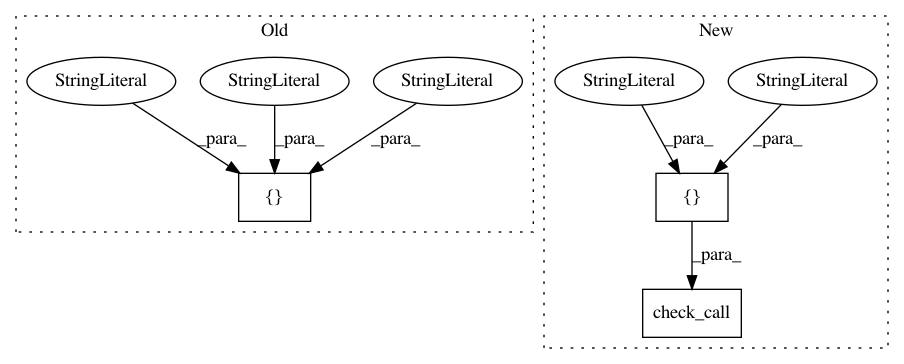

404f8e0c07f11d9d219c06d25c33e280cd88c058,tests/python/twitter/pants/scm/test_git.py,GitTest,setUpClass,#Any#,80
Before Change
subprocess.check_call(["git", "commit", "-am", "initial commit."])
subprocess.check_call(["git", "tag", "-a", "-m", "first tag", "first"])
subprocess.check_call(["git", "push", "--tags", "depot", "master"])
subprocess.check_call(["git", "branch", "--set-upstream", "master", "depot/master"])
with safe_open(cls.readme_file, "w") as readme:
readme.write("Hello World.")
After Change
with environment_as(GIT_DIR=cls.gitdir, GIT_WORK_TREE=cls.worktree):
subprocess.check_call(["git", "init"])
subprocess.check_call(["git", "remote", "add", "depot", cls.origin])
touch(cls.readme_file)
subprocess.check_call(["git", "add", "README"])
subprocess.check_call(["git", "commit", "-am", "initial commit."])
In pattern: SUPERPATTERN
Frequency: 3
Non-data size: 3
Instances
Project Name: pantsbuild/pants
Commit Name: 404f8e0c07f11d9d219c06d25c33e280cd88c058
Time: 2013-05-10
Author: john.sirois@gmail.com
File Name: tests/python/twitter/pants/scm/test_git.py
Class Name: GitTest
Method Name: setUpClass
Project Name: ilastik/ilastik
Commit Name: 97cf02913229a215db4b840b443876f21f38121f
Time: 2017-11-29
Author: fynn.beuttenmueller@iwr.uni-heidelberg.de
File Name: ilastik/applets/multicut/opMulticut.py
Class Name:
Method Name:
Project Name: pantsbuild/pants
Commit Name: 6f21ea60784ef511cbce116f5c758c4d44376e54
Time: 2013-05-13
Author: benjyw@gmail.com
File Name: tests/python/twitter/pants/scm/test_git.py
Class Name: GitTest
Method Name: setUpClass